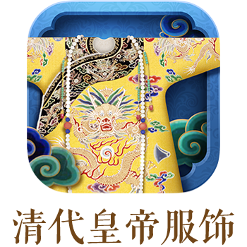

本书是“传心之美—梵蒂冈博物馆藏中国文物展”的配套图录，其中展品中有印证中梵友谊的礼物，有天主教艺术与中国艺术融合产生的精美文物，表达着两国首脑经常谈及的人与自然和谐相处的愿望。正如展览名称“传心之美”所示，愿我们共同探索中国和梵蒂冈艺术之美，让艺术之旅将我们团结在一起，迈向友谊的未来。

把故宫装进口袋





每日甄选一款馆藏珍品，邀您同游宋元山水，共访禁城别苑，探寻皇家日常那些令人惊叹的细节，感受传世珍品不竭的历史生命。